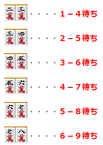
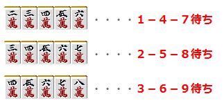
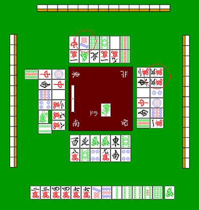
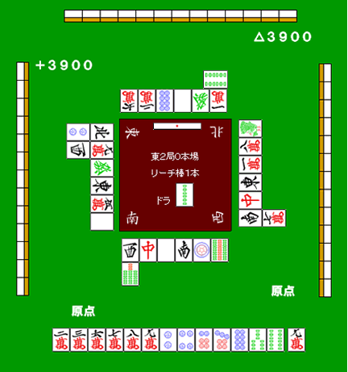
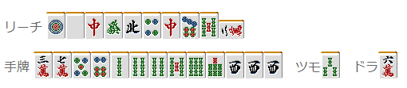

防守3—筋（1）：PDF193两句补文（非完整章）
79 博客 · 中文 PDF · 第 193–193 页
译文与整理说明
来源版本补文：逐字节摘录已独审通过PDF193/b6，不改网页残句、不声称网页全章通过；原完整论证/图例仍待全章门禁。
79 博客 · 中文 PDF · 第 193–193 页
来源版本补文：逐字节摘录已独审通过PDF193/b6，不改网页残句、不声称网页全章通过；原完整论证/图例仍待全章门禁。
【日本麻雀讲座译文】防守3—筋（1） · 原网页
原正文和原图保持；九处未知按精确候选分别保留。独立限定辨识/教学影响证据仅允许忠实展示作者原有论证，不认证完整牌河、暗手、概率或最优。原技术未通过回执和原raw保持。网页残句与独立PDF来源的两句导航补文成对使用。
【审校范围（非原文）1】保留原图及右侧牌河第2行右列万子点数未知的明确标记，不填入猜测牌码，也不宣称该牌河已逐牌完整转录。原文段落
【审校范围（非原文）2】保留原文对非初学者、一般情况下、可能和往往的限定；原文及候选的段落顺序、sourceSegments、tableContext和图序照所给数据保留，图中红圈继续显示。原文段落
【审校范围（非原文）3】原样保留作者对5万的安全牌表述及其上下文：所给理由涉及立直上家的2万、8万和34万、67万两面听牌；7饼的结论也限定为至少不会铳两面听牌。不得扩写为对所有听型或所有玩家绝对安全。原文段落
【审校范围（非原文）4】保留b0008至b0009及b0015至b0016的Web捕获残句和继承的不完整限制。PDF版本的完整句子如另行展示，须明确标注独立来源与版本，不能作为Web原文的无注补写。原文段落
【审校范围（非原文）5】完整牌河、暗手、概率和最优策略不属于本次有限许可；不据此宣称整章通过。原文段落
【来源版本说明（非原文）】本网页b0008–b0009及b0015–b0016保留原捕获残句和不完整标记；对应完整句子成对展示于独立PDF第193页b6版本摘录，单元79-cn-chapter-193-4-pdf193-supplement-unit-1。两处PDF原句另列于该版本，原PDF来源、父稿、已审切片及navigation角色保持；不是网页原文补写，也不将版本差异冒充同一来源。原文段落
独立PDF第193页：两句来源版本补文（非网页原文；非完整章）
免责声明：原文段落
以下文章的著作权等各种权利归原作者所有，翻译 By SeventhTG（XD）。如果你喜欢本文并有幸让你产生了转载的想法，请注明原作者、原文地址以及译者，谢谢。原文段落
免责声明：原文段落
以下文章的著作权等各种权利归原作者所有，翻译 By SeventhTG（XD）。如果你喜欢本文并有幸让你产生了转载的想法，请注明原作者、原文地址以及译者，谢谢。原文段落
原文地址：http://beginners.biz/reach/mamori3.html原文段落
------------------------------------------------------------------------------------原文段落
筋1：原文段落
有人立直的时候，最应该警戒的就要是原文段落
了。原文段落
只要对手不是麻将的初学者，原文段落
一般情况下都会等待嵌张、双碰听牌变化成两面听牌。原文段落
因为对手会等待嵌张和双碰听牌变化成两面的好形听牌，原文段落
所以听牌了也有可能不会立直。原文段落
因此立直的听牌形往往是两面居多，原文段落
大体的数据显示，所有的立直中原文段落
。原文段落
为了不铳两面听牌的理论就叫做“筋”。原文段落
------------------------------------------------------------------------------------原文段落
6个基本筋原文段落
------------------------------------------------------------------------------------原文段落
我们来看看实际的两面听牌吧。原文段落

自上而下共六行，每行左侧为搭子，右侧红字为对应听牌： 第1行：2m 3m；右侧标签：听1m、4m。 第2行：3m 4m；右侧标签：听2m、5m。 第3行：4m 5m；右侧标签：听3m、6m。 第4行：5m 6m；右侧标签：听4m、7m。 第5行：6m 7m；右侧标签：听5m、8m。 第6行：7m 8m；右侧标签：听6m、9m。
以上六组就是两面听牌的所有形。这六组需要全部记住。原文段落
要记住这六组应该是非常容易的。原文段落
------------------------------------------------------------------------------------原文段落
3条筋原文段落
------------------------------------------------------------------------------------原文段落
看了上面的六组听牌，原文段落
我们可以发现，1-4与4-7、2-5与5-8、3-6与6-9之间有相连的地方。原文段落
这样就可以推导出三面张的筋。原文段落

自上而下共三行，每行左侧为五张牌，右侧红字为对应听牌： 第1行：2m 3m 4m 5m 6m；右侧标签：听1m、4m、7m。 第2行：3m 4m 5m 6m 7m；右侧标签：听2m、5m、8m。 第3行：4m 5m 6m 7m 8m；右侧标签：听3m、6m、9m。
把基本两面听牌组合起来就可以形成三面听牌。原文段落
正是因为这样，6组基本的筋可以看作3条大筋。原文段落
6个筋分为3条大筋是非常重要的。原文段落
大家把筋的概念作为麻将的一个常识来记住吧。原文段落
------------------------------------------------------------------------------------原文段落
根据筋我们能知道什么原文段落
------------------------------------------------------------------------------------原文段落
（1）自己切过自己所听的牌即会振听，不能荣和。原文段落
（2）麻将中的两面听牌只有六种（1-4、2-5、3-6、4-7、5-8、6-9）原文段落
由以上两点，我们就可以知道什么牌不会铳两面听牌。原文段落

麻将桌俯视图。以下牌河均按画面位置记录，保留各排、各列关系。 下方手牌从左至右：2m 3m 4m 4m 6m 6m 7p 8p 2s 3s 4s 5s 8s；右侧分隔放置的摸入牌：6z。 上方牌河，牌面朝向上方玩家，整体相对画面旋转180度；每排按画面从左至右： 上排：7z 7p 6s 8s 5z 9s。 下排：1m 6z 4z 2m 8m 9s。 上排第2张7p有红圈。 右侧牌河，牌面朝向右侧玩家；每行按画面从左至右，自上而下： 第1行：2m 5m。 第2行：2z 万子牌（点数未能可靠辨认）。 第3行：5z 2p。 第4行：7z 1p。 第5行：2z 8p。 第6行：9s 1m。 右列最上方的5m有红圈。 下方牌河，牌面朝向下方玩家；每排按画面从左至右： 上排：3z 4z 6z 6z 1z 8s。 下排：8m 8s 4p 9m 2z 4p。 左侧牌河，牌面朝向左侧玩家；每行按画面从左至右，自上而下： 第1行：9s 7z 1p，其中9s位于另外两列的左侧。 第2行：3z 7z。 第3行：6p 5z。 第4行：4p 2m。 第5行：1s 9m。 第6行：2s 8m。 左、右两侧牌河的牌面均横向于画面，分别朝向各自玩家。 中央方框的风位文字：左上为东，右上为北，左下为南，右下为西；对应左侧东家、上方北家、下方南家、右侧西家。 中央偏下显示1s，左侧标签为“宝牌”。 中央方框左侧放有一根竖向白色红点立直棒。 上、左、右三边分别显示13张牌背。 原图未显示的信息：右侧牌河第2行右列的万子牌：黑色点数字形无法可靠辨认。
我们再来看看这个例子吧。 对家切7饼以及下家切的5万都通过了。 这就是通过“筋”得出的判断。 由于立直的上家切掉了4饼，所以至少他不是56饼的两面听牌，即使是也会振听。 所以切7饼至少不会铳两面听牌。 下家切的5万，是有2、8万所推导出的筋。 5万虽然可以有34万和67万两面听牌荣和， 但是上家切掉了2万和8万，所以不管是34万还是67万都会振听。 因此5万也可以说是一张安全牌。 （待续）原文段落
【日本麻雀讲座译文】防守9—兜牌 · 原网页
原正文和原图保持；九处未知按精确候选分别保留。独立限定辨识/教学影响证据仅允许忠实展示作者原有论证，不认证完整牌河、暗手、概率或最优。原技术未通过回执和原raw保持。
【审校范围（非原文）1】保留两张原图及其候选转录中的四处明确未知：b0004上方第一排最左万子，以及b0006左方A、B和右方C；不得以推测牌码替换。原文段落
【审校范围（非原文）2】保持b0001至b0009的原始DOM顺序、图文对应关系、原文条件、sourceSegments及其marks和href，并保留各块给出的tableContext。原文中的字词不因本次辨识而改写。原文段落
【审校范围（非原文）3】保留“没有人立直”“一向听”“摸到5饼什么的”“可以考虑”“摸到危险牌”等条件，以及七对子缺少确实性、须根据点数判断和防守基本为弃和的限制。原文段落
【审校范围（非原文）4】将作者的建议和风险评价作为原文论证展示；不得把筋牌3万或“两张牌的安全”扩写为已独立证明对所有对手绝对安全。原文段落
【审校范围（非原文）5】不得声称完整牌河、对手暗手、概率或最优策略已由本次审查恢复或验证；这也不是整章通过结论。原文段落
免责声明：原文段落
以下文章的著作权等各种权利归原作者所有，翻译 By SeventhTG（XD）。如果你喜欢本文并有幸让你产生了转载的想法，请注明原作者、原文地址以及译者，谢谢。原文段落
原文地址：http://beginners.biz/reach/mamori9.html ------------------------------------------------------------------------------------ 兜牌： 兜牌即一边扣住危险牌，一边向着和牌或者是听牌前进的打法。 一般情况下，对手立直之后： 1.自己没有听牌也要向着听牌或者和牌前进。 2.如果对日对自己不利的话。即使自己听牌也会拆掉手牌。 这样的情况就出现了“兜”这个选择了。 具体的说就是： 拆对子、拆搭子、拆暗刻、七对子4种方法。 ------------------------------------------------------------------------------------ 拆对子 ------------------------------------------------------------------------------------ 这是兜牌的常用手段， 通过一次的话，第二次也能通过。而且不会拆乱自己的手牌。 例1： 原文段落

中央文字：东3局0本场；立直棒1根；“宝牌”右侧为2p。中央左侧竖放一根立直棒。中央四角风位：左上北（4z）、右上西（3z）、左下东（1z）、右下南（2z）。 点数标记按画面位置：左上+7700，右上+2000，右下△7700，左下△2000。 下方手牌从左至右：6m 7m 7m 2p 3p 3p 4p 5p 6p 6s 7s 6z 6z；右侧分隔的摸入牌：8s。 下方牌河：第一排从画面左至右为1s 3z 1s 1m 4s 2s；第二排在第一排最左侧1s下方为1z。牌面均朝向下方玩家。 左方牌河：靠中央的一列从画面上至下为1p 9s 2s 7z 8p 4p，牌面相对画面顺时针旋转90度；第二列在最上方1p左侧为6s，此牌相对该玩家正常弃牌横置，是立直宣言牌，在画面中呈竖向。 上方牌河：第一排从画面左至右为［万子点数未辨明］9m 2z 2z 1s 5z；第二排在第一排最右侧5z上方为9p。牌面均相对画面倒置。 右方牌河：靠中央的一列从画面上至下为7z 2m 1m 2z 3z 6z；第二列在最下方6z右侧为1z。牌面相对画面逆时针旋转90度。 上方、左方、右方各显示13张背面朝向画面的暗手牌。 原图未显示的信息：上方牌河第一排从画面左数第1张：可辨为万子，但倒置的点数未能可靠辨明。
比如这样的例子，这是一个很能体现兜牌效果的例子。 弃和去切掉4饼和6索实在是太可惜了。 一发打3饼确实有点危险。 这里切掉已经打出1张的發是好手， 能够做成门断平宝牌1追立的话是很理想的。 ------------------------------------------------------------------------------------ 拆搭子 ------------------------------------------------------------------------------------ 我们再来看具体的例子吧。 原文段落

中央文字：东2局0本场；立直棒1根；“宝牌”右侧为2s。中央上侧横放一根立直棒。中央四角风位：左上东（1z）、右上北（4z）、左下南（2z）、右下西（3z）。 点数标记按画面位置：左上+3900，右上△3900，右下原点，左下原点。 下方手牌从左至右：2m 3m 7m 7m 8m 8m 2p 4p 6p 7p 8p 3s 4s；右侧分隔的摸入牌：8m。 下方牌河：第一排从画面左至右为3z 7z 5z 2z 1p 9s；第二排在第一排最左侧3z下方为7s。牌面均朝向下方玩家。 左方牌河：靠中央的一列从画面上至下为4z ［万子点数未辨明A］6z 1z ［万子点数未辨明B］5z；第二列在最上方4z左侧为2p，在其下方为3z。牌面相对画面顺时针旋转90度。 上方牌河：第一排从画面左至右为6m 2m 8p 5z 6z 2m，牌面均相对画面倒置；第二排在第一排最右侧2m上方为4s，此牌相对该玩家正常弃牌横置，是立直宣言牌，在画面中呈横向。 右方牌河：靠中央的一列从画面上至下为1s 8m 1m 1z 7z 2z；第二列在最下方2z右侧为［万子点数未辨明C］。牌面相对画面逆时针旋转90度。 上方、左方、右方各显示13张背面朝向画面的暗手牌。 原图未显示的信息：万子点数未辨明A：左方牌河靠中央一列从画面上数第2张，可辨为万子，点数未能可靠辨明。；万子点数未辨明B：左方牌河靠中央一列从画面上数第5张，可辨为万子，点数未能可靠辨明。；万子点数未辨明C：右方牌河第二列、最下方2z右侧的一张，可辨为万子，点数未能可靠辨明。
要是没有人立直的话应该拆掉24饼的搭子。（全攻的时候就该这么打） 兜牌的话，这里应该切掉2万。神进张摸到3饼的话就立直。 一向听的话，摸到5饼什么的，可以可以考虑切掉筋牌的3万。 同样是兜牌，这里打4索就是恶手。 不仅宝牌是2索，作为胜负牌的3索是非常危险的。 要拆掉搭子兜牌的话，就需要保证两张牌的安全。 上面虽然这么说，不过切掉2万之后摸到危险牌的话，拿还是快快弃和为上。 ------------------------------------------------------------------------------------ 拆暗刻 ------------------------------------------------------------------------------------ 拆掉3张安全牌的暗刻时，也还是可以让手牌有所进展的。 在这三巡里能够通过的牌增加的话，偶尔还是可以向和牌前进的。 原文段落

上排左侧标签“立直”；其右侧弃牌从左至右为：1p 5z 7z 6z 4z 4p 7z 7p 5s 2m。最后一张2m横置，其余牌竖向排列。 下排左侧标签“手牌”；其右侧手牌从左至右为：3m 7m 5p 6p 2s 4s 4s 5s 6s 7s 3z 3z 3z。 手牌右侧标签“摸入”，其右侧为3s。 最右侧标签“宝牌”，其右侧为6m。
比如这样的手牌，拆掉西的暗刻。 偶尔最后还是能以食断和牌的。 ------------------------------------------------------------------------------------ 七对子 ------------------------------------------------------------------------------------ 这是一个缺少确实性的方法，大家有没有面对立直弃和的时候，不知什么时候手牌居然七对子听牌了呢？ 比如役牌是宝牌，用不上的牌却又打不出去，同时自己有非向着听牌前进不可的时候。那就只能霸王硬上弓强凹单骑听牌了。 这个时候七对子是可以放手一搏的方法。 ------------------------------------------------------------------------------------ 兜牌需要注意的地方 ------------------------------------------------------------------------------------ 兜牌是应该在“能兜牌”的情况下使用的。 本来有和牌希望的牌也应该弃和；有些苦逼的牌也必须放手一搏。 这些都要根据自己的点数情况来进行判断。 “能兜牌”的状况是不确定的。 不要忘了防守的基本是“弃和”。 （待续）原文段落
【日本麻雀讲座译文】攻守判断3—攻守判断的标准 · 原网页
原正文和原图保持；九处未知按精确候选分别保留。独立限定辨识/教学影响证据仅允许忠实展示作者原有论证，不认证完整牌河、暗手、概率或最优。原技术未通过回执和原raw保持。
【审校范围（非原文）1】在例1图的转录和unknowns中保留左侧第4、5张及右侧第2、5张的明确未知和原有位置；不得填入猜测牌码或表示四家牌河已完整复原。原文段落
【审校范围（非原文）2】保留例1原图及其在正文中的位置，并按原始顺序保留例2、例3；目标和邻位近邻放大图是本次审查资料，不生成新的牌面细节。原文段落
【审校范围（非原文）3】保留正文原有顺序、原句、条件和强调语气，包括例1“立直的话”才有11600点、例2平和的可能条件、例3关于进张数与连续进攻的条件，以及理论中的“基本”。原文段落
【审校范围（非原文）4】保留各块原有tableContext、sourceSegments和标记；本次给出的正文块tableContext均为null，原有segments的marks均为空。原文段落
【审校范围（非原文）5】保留免责声明、译者及原文来源、例题标题、分隔、续篇标记和原始图序。原文段落
【审校范围（非原文）6】将作者的安全度、危险度、概率和攻守判断呈现为作者所写判断；不把本次有限辨识包装为完整牌河、暗手、概率或最优策略的独立验证。原文段落
【审校范围（非原文）7】附件编号及放大图说明若对读者显示，应区分历史加工附件与本次orderedImages；附件说明笔误属于source-note，不是教学错误。原文段落
免责声明： 以下文章的著作权等各种权利归原作者所有，翻译 By SeventhTG（XD）。如果你喜欢本文并有幸让你产生了转载的想法，请注明原作者、原文地址以及译者，谢谢。 原文地址： http://beginners.biz/osihiki/osihiki03.html ------------------------------------------------------------------------------------原文段落
那么，前一节我列举了攻守判断的要素原文段落
我们来看看实际的几个是应该攻，还是应该守的例子。原文段落
例1：原文段落

中央：东2局0本场。白色立直棒右侧标示1根；下方“宝牌”标签右侧为9p。 座位及点数：下方东家24000，右侧南家25000，上方西家27000，左侧北家23000。 下方手牌，按屏幕从左至右：3m 4m 5m 7m 8m 9p 9p 3s 4s 6s 7s 8s 6z。右侧隔开的一张：6m。 下方弃牌，按屏幕从左至右：1p 1s 1z 6p 7s 2m。 上方弃牌，按屏幕从左至右：6s（相对上家正常牌向横置）5z 6p 9m 7z 1z。除横置的6s外，牌面相对屏幕倒置。 左侧弃牌，按屏幕从上至下：1m 9m 7z [风牌未辨明] [风牌未辨明] 3p。牌面相对屏幕顺时针旋转90°。 右侧弃牌，按屏幕从上至下：9s [风牌未辨明] 5z 7z [风牌未辨明] 9m。牌面相对屏幕逆时针旋转90°。 上方、左侧、右侧各有13张背面朝上的手牌。未见副露。 原图未显示的信息：左侧弃牌从上至下第4张的风牌牌码未辨明。；左侧弃牌从上至下第5张的风牌牌码未辨明。；右侧弃牌从上至下第2张的风牌牌码未辨明。；右侧弃牌从上至下第5张的风牌牌码未辨明。
看到这个牌的瞬间就有一种想扔棒子的冲动，一上来我就给了一个比较极端的例子。原文段落
【和牌的容易度】好型两面听牌原文段落
【打点】立直的话有11600点原文段落
【牌的危险度】发并不是特别危险的一张牌原文段落
【弃和成功率】安全牌只有6索原文段落
不管怎么看，这牌没有理由不对日。应该毫不犹豫地扔棒子对攻。原文段落
------------------------------------------------------------------------------------原文段落
例2：原文段落

中央：东4局0本场。白色立直棒右侧标示1根；下方“宝牌”标签右侧为3z。 座位及点数：下方北家33500，右侧东家25500，上方南家24500，左侧西家15500。 下方手牌，按屏幕从左至右：1m 1m 2p 2p 3p 7p 9p 5s 5s（赤）6s 7s 8s 9s。右侧隔开的一张：2s。 下方弃牌：第一行从左至右为6z 3m 8m 1s 5z 9m；第二行在第一行左端下方，从左至右为1s 2s。 上方弃牌：靠中央一行按屏幕从左至右为2m 2p 1z 9s 3m 3s；外侧一行位于其右端上方，从左至右为9p 5z 4z。牌面均相对屏幕倒置。 左侧弃牌：靠中央一列按屏幕从上至下为4z 1z 8s 5z 9s 1z；外侧一列从上至下为4m 4s 9m。外侧9m相对左家正常牌向横置，屏幕上呈直立；其余牌面相对屏幕顺时针旋转90°。 右侧弃牌：靠中央一列按屏幕从上至下为9p 8m 7p 3m 6z 4z；外侧一列与内列后三张对齐，从上至下为1m 2z 9s。牌面均相对屏幕逆时针旋转90°。 上方、左侧、右侧各有13张背面朝上的手牌。未见副露。
接下来是一个明显该弃和的例子。原文段落
【和牌的容易度】两向听而且还有愚型，鸣牌也没什么帮助，要和出概率很低。原文段落
【打点】立直宝牌1，运气好的可能有平和原文段落
【牌的危险度】最没用的这张2索危险度还是比较高原文段落
【弃和成功率】8、9索两种现物，而且1万的安全度比较高原文段落
还有就是，自己是TOP，而立直的人是四位。这些条件结合起来看，没有必要去进攻。原文段落
为了以防别人追立，先从8索开始切，共同的安全牌9索留到以后的巡目再切。原文段落
以上是一些很容易明白的例子，所以还没什么难度。实际上进攻和防守的因素混合在一起的比较难以判断的情况比较多。原文段落
------------------------------------------------------------------------------------原文段落
例3：原文段落

中央：南1局0本场。白色立直棒右侧标示1根；下方“宝牌”标签右侧为5p。 座位及点数：下方北家21100，右侧东家21000，上方南家32000，左侧西家25000。 下方手牌，按屏幕从左至右：2m 3m 5m 7m 7m 5p 5p 6p 7p 5s 7s 8s 9s。右侧隔开的一张：6m。 下方弃牌：第一行从左至右为1s 1p 7z 2z 5z 2p；第二行位于第一行左端下方，从左至右为1z 1s 8s。 上方弃牌：靠中央一行按屏幕从左至右为1z 8p 9s 8m 3z 2m；外侧一行位于其右端上方，从左至右为6p（相对上家正常牌向横置）7z 2z。除横置6p外，牌面均相对屏幕倒置。 左侧弃牌：靠中央一列按屏幕从上至下为1z 7z 6z 3z 1p 8m；外侧一列从上至下为7s 5z 2m 8p。牌面均相对屏幕顺时针旋转90°。 右侧弃牌：靠中央一列按屏幕从上至下为1s 3s 2z 6z 5z 3z；外侧一列与内列后四张对齐，从上至下为9p 1z 1m 4m。牌面均相对屏幕逆时针旋转90°。 左下角西家副露，按屏幕从上至下：4s 3s 5s（赤）。4s相对西家正常牌向横置，在屏幕上呈直立；3s与赤5s的牌面相对屏幕顺时针旋转90°。 上方、右侧各有13张背面朝上的手牌；左侧有10张背面朝上的手牌。
【和牌的容易度】一向听，进张不太多了原文段落
【打点】门平宝牌1~3，足够了原文段落
【牌的危险度】没有通过的筋牌比较多，7万、5索都很危险原文段落
【弃和成功率】现物两张、筋牌一张，估计能够弃和成功原文段落
除了基本的判断材料之外，南场的TOP立直，看来是想确定自己的领先优势。原文段落
这样的状况下，为了减少自己的迷惑、冷静的进行攻守判断，有攻守判断的“脊柱”材料是非常重要的。原文段落
这个讲座里，我比较推荐以“自己的向听数”来进行判断。原文段落
具体来说就是，“要与立直对攻，自己要先听牌了”是基本；“一向听的话，就可以攻一巡”，这么记就好了。原文段落
为什么一向听一下不能对攻呢？原文段落
自己听牌之前是不会有获得点棒的机会的。即使对攻，也不能保证下一巡能够维持听牌，说不定危险牌还回来。原文段落
自己还没有听牌的时候切危险牌，只是给对手增加机会而已。原文段落
宝牌2的一向听，听牌了的话，打点比较有优势。原文段落
如同例3一样，那样的进张数要连续攻2次也是不利的。还是弃和比较好。原文段落
理论：原文段落
攻守判断以向听数做主线是比较主流的方式。听牌的话就攻，一向听的话攻一次，两向听以下弃和是基本。原文段落
攻守判断想要模式化是非常困难的，所以下一节就不在打算再系统化了，而去考虑一下赤牌麻将中应该攻、还是该守的实例。原文段落
（待续）原文段落